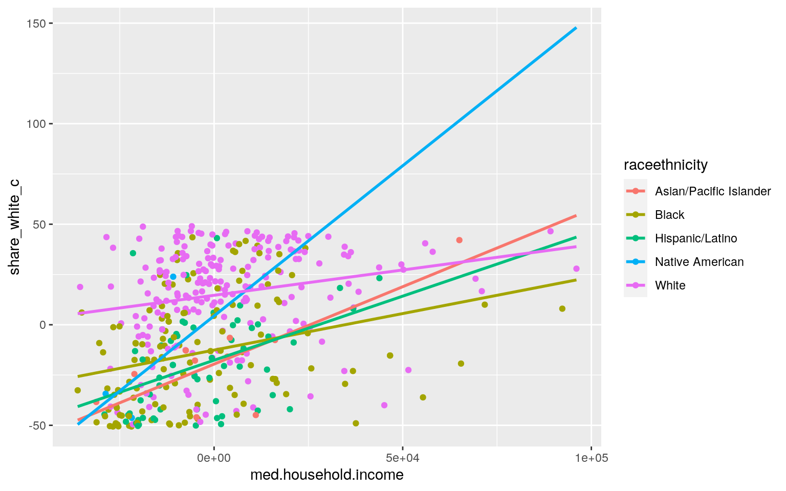
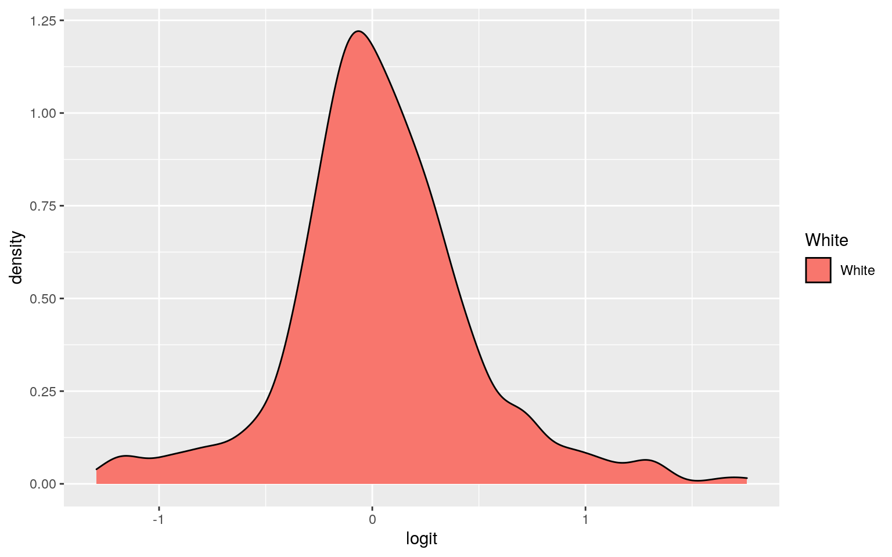
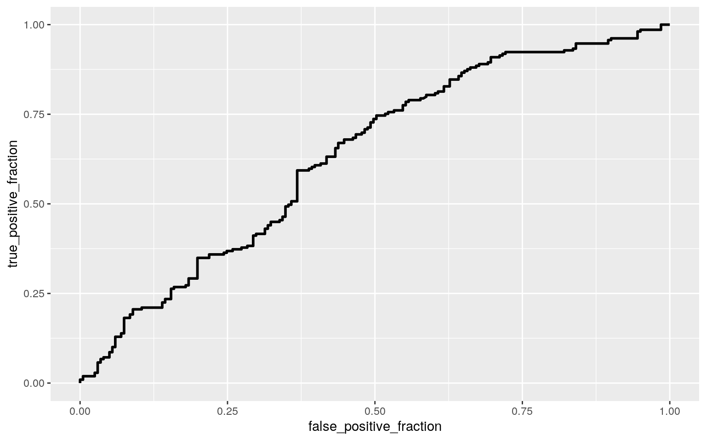

A knitted R Markdown document (preferably HTML) and the raw R Markdown file (as .Rmd) should both be submitted to Canvas by :59pm on the due date. These two documents will be graded jointly, so they must be consistent (i.e., don’t change the R Markdown file without also updating the knitted document). In the .Rmd file for Project 2, you can copy the first code-chunk into your project .Rmd file to get better formatting. Notice that you can adjust the opts_chunk$set(…) above to set certain parameters if necessary to make the knitting cleaner (you can globally set the size of all plots, etc). You can copy the set-up chunk in Project2.Rmd: I have gone ahead and set a few for you (such as disabling warnings and package-loading messges when knitting)!
Like before, I envision your written text forming something of a narrative structure around your code/output. All results presented must have corresponding code. Any answers/results/plots etc. given without the corresponding R code that generated the result will not be graded. Furthermore, all code contained in our project document should work properly. Please do not include any extraneous code or code which produces error messages. (Code which produces warnings is fine as long as you understand what the warnings mean.)
Find one dataset with at least 5 variables (ideally more!) that you want to use to build models/test hypotheses. At least one should be categorical (with 2-5 groups, ideally; definitely fewer than 0) and at least two should be numeric (taking on more than 0 distinct values). Ideally, at least of your variables will be binary (if not, you will have to create one by discretizing a numeric or collapsing levels of a categorical). You will need a minimum of 40 observations (at least 0 observations for every explanatory variable you have, ideally 20+ observations/variable).
It is perfectly fine to use either dataset (or the merged dataset, or a subset of your variables) from Project . However, I might encourage you to diversify things a bit and choose a different dataset to work with (particularly if the variables did not reveal interesting associations in Project that you want to follow up with). The only requirement/restriction is that you may not use data from any examples we have done in class or lab. It would be a good idea to pick more cohesive data this time around (i.e., variables that you actually thing might have a relationship you would want to test). Think more along the lines of your Biostats project.
Again, you can use data from anywhere you want (see bottom for resources)! If you want a quick way to see whether a built-in (R) dataset has binary and/or character (i.e., categorical) variables, check out this list: https://vincentarelbundock.github.io/Rdatasets/datasets.html.
library(ggplot2)
library(dplyr)
library(tidyverse)
library(fivethirtyeight)
library(vegan)
police_killings <- na.omit(police_killings)Introduction: The dataset for this project will be the police_killings dataset, which has data regarding people who died from interactions with police in 2015. The categorical variables of interest are: ‘gender’, ‘raceethnicity’, and ‘cause’. The numeric variables of interest are:‘h_income’, ‘college’, and ‘share_white’. There are 467 total observations for all of the variables
1. (5 pts) Perform a MANOVA testing whether any of your numeric variables (or a subset of them, if including them all is unreasonable or doesn’t make sense) show a mean difference across levels of one of your categorical variables (3). If they do, perform univariate ANOVAs to find response(s) showing a mean difference across groups (3), and perform post-hoc t tests to find which groups differ (3). Discuss the number of tests you have performed, calculate the probability of at least one type I error (if unadjusted), and adjust the significance level accordingly (bonferroni correction) before discussing significant differences (3). Briefly discuss some of the MANOVA assumptions and whether or not they are likely to have been met here (no need for anything too in-depth) (2).
PoliceManova<-manova(cbind(h_income, share_white)~raceethnicity, data=police_killings)
summary(PoliceManova)## Df Pillai approx F num Df den Df Pr(>F)
## raceethnicity 4 0.29301 17.38 8 810 < 2.2e-16 ***
## Residuals 405
## ---
## Signif. codes: 0 '***' 0.001 '**' 0.01 '*' 0.05 '.' 0.1
' ' 1summary.aov(PoliceManova)## Response h_income :
## Df Sum Sq Mean Sq F value Pr(>F)
## raceethnicity 4 6.7014e+09 1675356560 3.9134 0.003946 **
## Residuals 405 1.7339e+11 428112533
## ---
## Signif. codes: 0 '***' 0.001 '**' 0.01 '*' 0.05 '.' 0.1
' ' 1
##
## Response share_white :
## Df Sum Sq Mean Sq F value Pr(>F)
## raceethnicity 4 104972 26243.0 40.575 < 2.2e-16 ***
## Residuals 405 261948 646.8
## ---
## Signif. codes: 0 '***' 0.001 '**' 0.01 '*' 0.05 '.' 0.1
' ' 1pairwise.t.test(police_killings$h_income, police_killings$raceethnicity, p.adj = "none")##
## Pairwise comparisons using t tests with pooled SD
##
## data: police_killings$h_income and
police_killings$raceethnicity
##
## Asian/Pacific Islander Black Hispanic/Latino Native
American
## Black 0.3208 - - -
## Hispanic/Latino 0.3126 0.9083 - -
## Native American 0.1087 0.2197 0.2404 -
## White 0.9313 0.0018 0.0104 0.0531
##
## P value adjustment method: nonepairwise.t.test(police_killings$share_white, police_killings$raceethnicity, p.adj = "none")##
## Pairwise comparisons using t tests with pooled SD
##
## data: police_killings$share_white and
police_killings$raceethnicity
##
## Asian/Pacific Islander Black Hispanic/Latino Native
American
## Black 0.6943 - - -
## Hispanic/Latino 0.7280 0.1113 - -
## Native American 0.8306 0.6147 0.9876 -
## White 8.1e-05 < 2e-16 < 2e-16 0.0053
##
## P value adjustment method: none23 tests were run overall; 1 MANOVA, 2 univariate ANOVAs, and 10 t-tests. There is a 69% chance that a Type-1 Error was made when unadjusted. Using the Bonferroni correction, the new threshold of significance is 0.0022, and with that many of the differences found were insignificant except for a few. The difference between the median household income of the area where a black person or white person was killed significantly differed. As well, the difference in the proportion of the population that is non-Hispanic white differed significantly between police victims who were white and those who were Asian/Pacific Islander, Black, and Hispanic/Latino. Of the MANOVA assumptions, it is most likely that the assumptions of homogeneity of within-group covariance matrices and no extreme univariate or multivariate outliers were not met.
2. (10 pts) Perform some kind of randomization test on your data (that makes sense). The statistic can be anything you want (mean difference, correlation, F-statistic/ANOVA, chi-squared), etc. State null and alternative hypotheses, perform the test, and interpret the results (7). Create a plot visualizing the null distribution and the test statistic (3).
pol.vic.data <- police_killings %>% select(gender, raceethnicity, cause, h_income, share_white, college)
summary(aov(share_white~cause,data=pol.vic.data))## Df Sum Sq Mean Sq F value Pr(>F)
## cause 3 1524 507.8 0.564 0.639
## Residuals 406 365396 900.0An ANOVA was run to see if the share of the population that is non_Hispanic white differs in the cause of death of the police victim. The null hypothesis of the ANOVA is that the share of the population that is non-Hispanic white is not significantly different across causes of death. The alternative hypothesis is that the share of the population that is non-Hispanic white is significantly different across causes of death. The results show that there is no significant difference in the share of the population that is non-Hispanic white between causes of death.
3. (40 pts) Build a linear regression model predicting one of your response variables from at least 2 other variables, including their interaction. Mean-center any numeric variables involved in the interaction.
- Interpret the coefficient estimates (do not discuss significance) (10)
- Plot the regression using `ggplot()` using geom_smooth(method="lm"). If your interaction is numeric by numeric, refer to code in the slides to make the plot or check out the `interactions` package, which makes this easier. If you have 3 or more predictors, just chose two of them to plot for convenience. (10)
- What proportion of the variation in the outcome does your model explain? (4)
- Check assumptions of linearity, normality, and homoskedasticity either graphically or using a hypothesis test (5)
- Regardless, recompute regression results with robust standard errors via `coeftest(..., vcov=vcovHC(...))`. Discuss significance of results, including any changes from before/after robust SEs if applicable. (10)pol.vic.data$share_white_c <- pol.vic.data$share_white - mean(pol.vic.data$share_white)
pol.vic.data$h_income_c <- pol.vic.data$h_income - mean(pol.vic.data$h_income)
pol.fit<-lm(share_white_c ~ raceethnicity*h_income_c, data=pol.vic.data)
summary(pol.fit)##
## Call:
## lm(formula = share_white_c ~ raceethnicity * h_income_c,
data = pol.vic.data)
##
## Residuals:
## Min 1Q Median 3Q Max
## -66.017 -18.225 1.732 17.497 66.942
##
## Coefficients:
## Estimate Std. Error t value Pr(>|t|)
## (Intercept) -1.957e+01 7.767e+00 -2.519 0.0121 *
## raceethnicityBlack 6.977e+00 8.076e+00 0.864 0.3881
## raceethnicityHispanic/Latino 1.930e+00 8.402e+00 0.230
0.8185
## raceethnicityNative American 2.397e+01 2.637e+01 0.909
0.3638
## raceethnicityWhite 3.422e+01 7.954e+00 4.302 2.13e-05
***
## h_income_c 7.698e-04 3.128e-04 2.461 0.0143 *
## raceethnicityBlack:h_income_c -4.066e-04 3.278e-04
-1.240 0.2155
## raceethnicityHispanic/Latino:h_income_c -1.324e-04
3.719e-04 -0.356 0.7220
## raceethnicityNative American:h_income_c 7.237e-04
1.362e-03 0.531 0.5954
## raceethnicityWhite:h_income_c -5.180e-04 3.232e-04
-1.603 0.1098
## ---
## Signif. codes: 0 '***' 0.001 '**' 0.01 '*' 0.05 '.' 0.1
' ' 1
##
## Residual standard error: 24.38 on 400 degrees of freedom
## Multiple R-squared: 0.3521, Adjusted R-squared: 0.3375
## F-statistic: 24.15 on 9 and 400 DF, p-value: < 2.2e-16ggplot(pol.vic.data, aes(x=h_income_c, y=share_white_c,group=raceethnicity))+geom_point(aes(color=raceethnicity))+
geom_smooth(method="lm",se=F,fullrange=T,aes(color=raceethnicity))+xlab("med.household.income")
library(sandwich); library(lmtest)
bptest(pol.fit)##
## studentized Breusch-Pagan test
##
## data: pol.fit
## BP = 11.702, df = 9, p-value = 0.2306resids<-pol.fit$residuals
shapiro.test(resids)##
## Shapiro-Wilk normality test
##
## data: resids
## W = 0.9923, p-value = 0.0327coeftest(pol.fit, vcov = vcovHC(pol.fit))[,1:2]## Estimate Std. Error
## (Intercept) -1.956801e+01 6.045133e+00
## raceethnicityBlack 6.977101e+00 6.533005e+00
## raceethnicityHispanic/Latino 1.929565e+00 6.669218e+00
## raceethnicityNative American 2.397401e+01 5.765843e+01
## raceethnicityWhite 3.421926e+01 6.289522e+00
## h_income_c 7.698228e-04 4.534658e-04
## raceethnicityBlack:h_income_c -4.066085e-04 4.651986e-04
## raceethnicityHispanic/Latino:h_income_c -1.324190e-04
4.810205e-04
## raceethnicityNative American:h_income_c 7.237134e-04
2.378061e-03
## raceethnicityWhite:h_income_c -5.179734e-04 4.603573e-04According to the coefficients from the linear regression, the raceethnicity of the victims being either White or Native American have strong positive relationships with the centered ‘share_white_c’ variable. While the victim being Black or Hispanic had a weaker positive relationship with the ‘share_white_c’ variable. The centered median household income (h_income_c) had essentially no relationship with the ‘share_white_c’ of the population. When considering the interactions between ‘raceethnicity’ and ‘h_income_c’ there was also little to no relationship for each of them, with all but one having a slightly negative relationship and Native American:h_income_c having a slightly positive relationship. Using a Breusch-Pagan test to test for homoskedasticity, a p-value of 0.231 was calculated, indicating that the data does display homoskedasticity. Next, a Shapiro-Wilk normality test was run, and a p-value of 0.0327 was calculated, indicating that the data is not normal. Lastly, by looking at the regression graph, it is clear that the data is linear. Once robust SEs were added, the coefficients of the regression remain unchanged, this is due to the fact that the data was already homoskedastic, so there was nothing for the robust SEs to correct.
4. (5 pts) Rerun same regression model (with the interaction), but this time compute bootstrapped standard errors (either by resampling observations or residuals). Discuss any changes you observe in SEs and p-values using these SEs compared to the original SEs and the robust SEs)
pol_dat<-pol.vic.data[sample(nrow(pol.vic.data),replace=TRUE),]
samp_distn<-replicate(5000, {
pol_dat<-pol_dat<-pol.vic.data[sample(nrow(pol.vic.data),replace=TRUE),]
fit<-lm(share_white_c ~ raceethnicity*h_income_c, data=pol.vic.data)
coef(fit)
})
samp_distn%>%t%>%as.data.frame%>%summarize_all(sd)## (Intercept) raceethnicityBlack
raceethnicityHispanic/Latino raceethnicityNative American
## 1 0 0 0 0
## raceethnicityWhite h_income_c
raceethnicityBlack:h_income_c
## 1 0 0 0
## raceethnicityHispanic/Latino:h_income_c
raceethnicityNative American:h_income_c
## 1 0 0
## raceethnicityWhite:h_income_c
## 1 05. (30 pts) Fit a logistic regression model predicting a binary variable (if you don’t have one, make/get one) from at least two explanatory variables (interaction not necessary).
- Interpret coefficient estimates in context (10)
- Report a confusion matrix for your logistic regression (5)
- Compute and discuss the Accuracy, Sensitivity (TPR), Specificity (TNR), Precision (PPV), and AUC of your model (5)
- Using ggplot, make a density plot of the log-odds (logit) colored/grouped by your binary outcome variable (5)
- Generate an ROC curve (plot) and calculate AUC (either manually or with a package); interpret (5)library(plotROC)
pol.vic.data <- pol.vic.data %>% mutate(White= ifelse(raceethnicity=="White", 1, 0))
vic.fit<-glm(White~h_income_c+cause, data=pol.vic.data, family="binomial")
vic.prob<-predict(vic.fit,type="response")
exp(coef(vic.fit))## (Intercept) h_income_c causeGunshot causeStruck by
vehicle
## 0.4250319 1.0000173 2.5942554 3.8342501
## causeTaser
## 1.4671716pol.vic.data$probs<-predict(vic.fit,type="response")
table(predict=as.numeric(vic.prob>.5),truth=pol.vic.data$White)%>%addmargins## truth
## predict 0 1 Sum
## 0 117 81 198
## 1 84 128 212
## Sum 201 209 410pol.vic.data$logit<-predict(vic.fit,type="link")
pol.vic.data %>% mutate(White=as.factor('White')) %>% ggplot() + geom_density(aes(logit, fill=White))
ROC<-ggplot(pol.vic.data)+geom_roc(aes(d=White,m=probs), n.cuts=0)
ROC
calc_auc(ROC)## PANEL group AUC
## 1 1 -1 0.6348283Interpreting the coefficients, the odds of being White are multiplied by 1.00 for every 1 unit increase of h_income_c, 2.59 if the victim was killed by gunshot, 3.83 if the victim was killed by being struck by the police vehicle, and 1.47 if the victim was killed by a taser.
The confusion matrix above was used to compute the following statistics: accuracy = 117+128/410 = 0.598, sensitivity (TPR) = 128/209 = 0.612, specificity (TNR) = 117/201 = 0.582, and precision (PPV) = 128/212 = 0.604. An ROC plot was then generated and the AUC was calculated to be 0.635, meaning that centered median household income (h_income_c) with cause of death (cause) and their interaction was a poor predictor of whether the victim was white or not.
6. (25 pts) Perform a logistic regression predicting the same binary response variable from ALL of the rest of your variables (the more, the better!)
- Fit model, compute in-sample classification diagnostics (Accuracy, Sensitivity, Specificity, Precision, AUC), and interpret (5)
- Perform 0-fold (or repeated random sub-sampling) CV with the same model and report average out-of-sample classification diagnostics (Accuracy, Sensitivity, Specificity, Precision, and AUC); interpret AUC and compare with the in-sample metrics (10)
- Perform LASSO on the same model/variables. Choose lambda to give the simplest model whose accuracy is near that of the best (i.e., `lambda.se`). Discuss which variables are retained. (5)
- Perform 0-fold CV using only the variables lasso selected: compare model's out-of-sample AUC to that of your logistic regressions above (5)total.fit<-glm(White~gender+cause+h_income_c+share_white_c+college, data=pol.vic.data, family="binomial")
total.prob<-predict(total.fit,type="response")
class_diag(total.prob, pol.vic.data$White)## acc sens spec ppv auc
## 1 0.7560976 0.7703349 0.7412935 0.7558685 0.8223833set.seed(1234)
fraction<-0.5
train_n<-floor(fraction*nrow(pol.vic.data))
iter<-500
diags<-NULL
for(i in 1:iter){
train_index<-sample(1:nrow(pol.vic.data),size=train_n)
train<-pol.vic.data[train_index,]
test<-pol.vic.data[-train_index,]
truth<-test$White
fit<-glm(White~gender+cause+h_income_c+share_white_c+college,data=train,family="binomial")
probs<-predict(fit,newdata = test,type="response")
diags<-rbind(diags,class_diag(probs,truth))
}
summarize_all(diags,mean)## acc sens spec ppv auc
## 1 0.7408683 0.7535832 0.7293351 0.7429739 0.7993307library(glmnet)
vic.y<-as.matrix(pol.vic.data$White) #grab response
vic.x<-model.matrix(White~gender+cause+h_income_c+share_white_c+college,data=pol.vic.data)
cv<-cv.glmnet(vic.x,vic.y,family="binomial")
vic.lasso<-glmnet(vic.x,vic.y,family="binomial",lambda=cv$lambda.1se)
coef(vic.lasso)## 9 x 1 sparse Matrix of class "dgCMatrix"
## s0
## (Intercept) 0.03812930
## (Intercept) .
## genderMale .
## causeGunshot .
## causeStruck by vehicle .
## causeTaser .
## h_income_c .
## share_white_c 0.02845433
## college .set.seed(1234)
fraction<-0.5
train_n<-floor(fraction*nrow(pol.vic.data))
iter<-500
diags<-NULL
for(i in 1:iter){
train_index<-sample(1:nrow(pol.vic.data),size=train_n)
train<-pol.vic.data[train_index,]
test<-pol.vic.data[-train_index,]
truth<-test$White
fit<-glm(White~share_white_c,data=train,family="binomial")
probs<-predict(fit,newdata = test,type="response")
diags<-rbind(diags,class_diag(probs,truth))
}
summarize_all(diags,mean)## acc sens spec ppv auc
## 1 0.7511122 0.7753733 0.7279326 0.7473966 0.8058966When running in-sample classification diagnostics, the accuracy = 0.756, sensitivity (TPR) = 0.770, specificity (TNR) = 0.741, precision (PPV) = 0.756, and the AUC = 0.822. this means that the model was a good predictor of if the victim was white based on all of the variables, classifying a victim as White a good amount of the time, good at classifying victims as not White, and overall did very good.
After performing the repeated random sub-sampling CV the average out-of-sample classification diagnostics were: accuracy = 0.741, sensitivity (TPR) = 0.754, specificity (TNR) = 0.729, precision (PPV) = 0.743, and the AUC = 0.799 this means that the model performed relatively the same overall but slightly worse across the board.
The lasso regularization returned only the share_white_c variable, so when another repeated random sub-sampling CV was performed trying to classify if the victim was white from the share_white_c variable the average out-of-sample classification disgnostics were: accuracy = 0.751, sensitivity (TPR) = 0.775, specificity (TNR) = 0.728, precision (PPV) = 0.747, and the AUC = 0.806 this means that the model performed better than the out-of-sample classification, but still not as good as the in-sample. The lasso’d out-of-sample model was a good predictor of if the victim was White overall. It did have the best sensitivity, so it correctly classified victims as White the best of the 3 models, however it also had the worst specificty so it correctly classified victims as non-White the least, an expected trade-off.
You can choose ANY datasets you want that meet the above criteria for variables and observations. You can make it as serious as you want, or not, but keep in mind that you will be incorporating this project into a portfolio webpage for your final in this course, so choose something that really reflects who you are, or something that you feel will advance you in the direction you hope to move career-wise, or something that you think is really neat, or whatever. On the flip side, regardless of what you pick, you will be performing all the same tasks, so it doesn’t end up being that big of a deal.
If you are totally clueless and have no direction at all, log into the server and type
data(package = .packages(all.available = TRUE))This will print out a list of ALL datasets in ALL packages installed on the server (a ton)! Scroll until your eyes bleed! Actually, do not scroll that much… To start with something more manageable, just run the command on your own computer, or just run data() to bring up the datasets in your current environment. To read more about a dataset, do ?packagename::datasetname.
If it is easier for you, and in case you don’t have many packages installed, a list of R datasets from a few common packages (also downloadable in CSV format) is given at the following website: https://vincentarelbundock.github.io/Rdatasets/datasets.html.
A good package to download for fun/relevant data is fivethiryeight.
Run install.packages("fivethirtyeight"), load the packages with library(fivethirtyeight), run data(), and then scroll down to view the datasets. Here is an online list of all 27 datasets (with links to the 538 articles). Lots of sports, politics, current events, etc.
If you have already started to specialize (e.g., ecology, epidemiology) you might look at discipline-specific R packages (vegan, epi, respectively). We will be using some tools from these packages later in the course, but they come with lots of data too, which you can explore according to the directions above
However, you emphatically DO NOT have to use datasets available via R packages! In fact, I would much prefer it if you found the data from completely separate sources and brought them together (a much more realistic experience in the real world)! You can even reuse data from your SDS328M project, provided it shares a variable in common with other data which allows you to merge the two together (e.g., if you still had the timestamp, you could look up the weather that day: https://www.wunderground.com/history/). If you work in a research lab or have access to old data, you could potentially merge it with new data from your lab!
Here is a curated list of interesting datasets (read-only spreadsheet format): https://docs.google.com/spreadsheets/d/wZhPLMCHKJvwOkP4juclhjFgqIY8fQFMemwKL2c64vk/edit
Here is another great compilation of datasets: https://github.com/rfordatascience/tidytuesday
Here is the UCI Machine Learning Repository: https://archive.ics.uci.edu/ml/index.php
Here is another good general place to look: https://www.kaggle.com/datasets
To help narrow your search down or to see interesting variable ideas, check out https://www.tylervigen.com/spurious-correlations. This is the spurious correlations website, and it is fun, but if you look at the bottom of each plot you will see sources for the data. This is a good place to find very general data (or at least get a sense of where you can scrape data together from)!
If you are interested in medical data, check out www.countyhealthrankings.org
If you are interested in scraping UT data, they make loads of data public (e.g., beyond just professor CVs and syllabi). Check out all the data that is available in the statistical handbooks: https://reports.utexas.edu/statistical-handbook
Data.gov 86,000+ datasets!
Social Explorer is a nice interface to Census and American Community Survey data (more user-friendly than the government sites). May need to sign up for a free trial.
U.S. Bureau of Labor Statistics
Gapminder, data about the world.
…